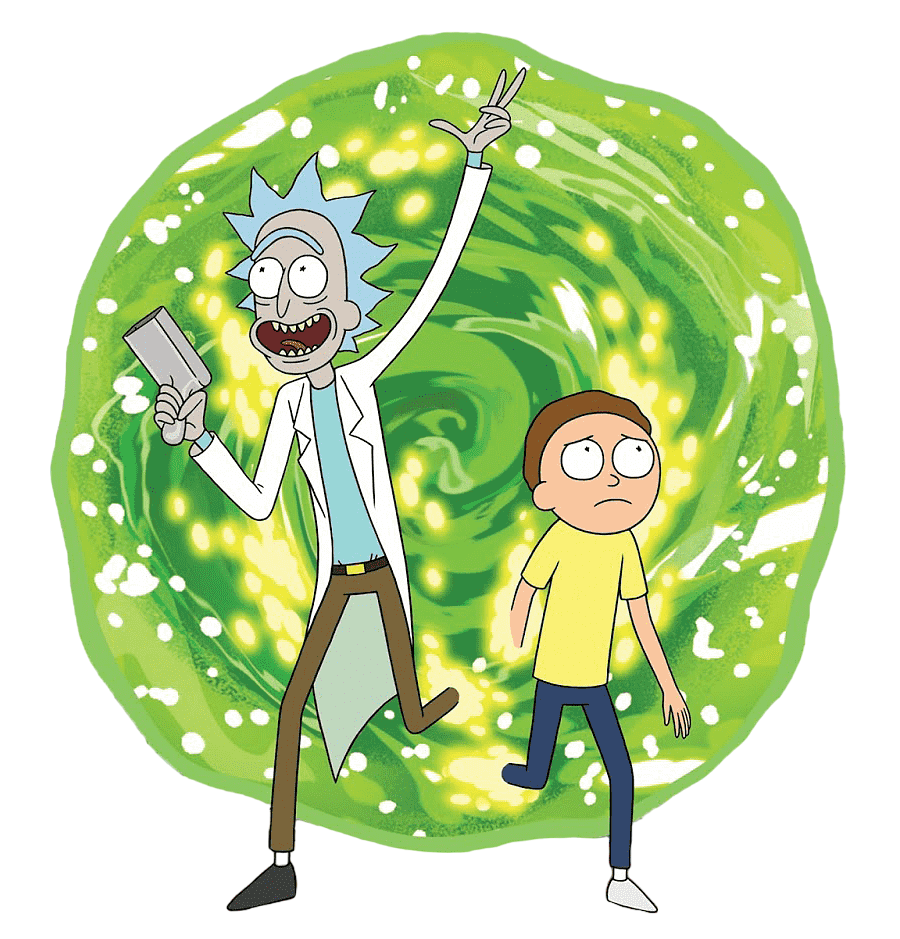
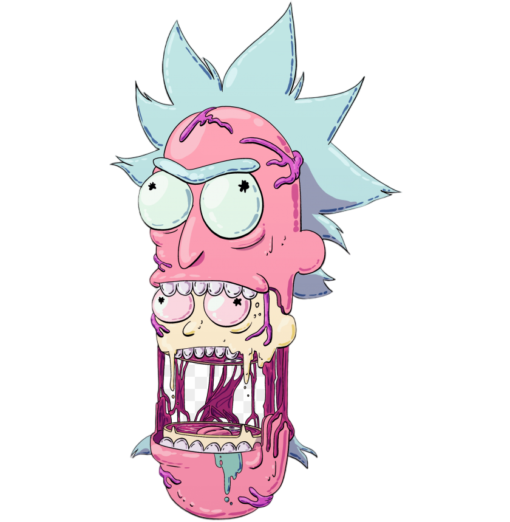

Que es Rick & Morty?
"Rick and Morty" es una serie de televisión de animación para adultos creada por Justin Roiland y Dan Harmon. La serie sigue las aventuras de un científico loco alcohólico llamado Rick Sanchez y su nieto, Morty Smith, quien a menudo lo acompaña en sus peligrosas y extrañas aventuras a través del tiempo, el espacio y dimensiones alternativas. La serie combina elementos de la ciencia ficción, la comedia negra y la sátira, y es conocida por su humor irreverente, sus referencias culturales y su exploración de temas existenciales y filosóficos.
"Rick and Morty" se estrenó en el canal de televisión estadounidense Adult Swim en 2013 y ha ganado una gran popularidad y aclamación crítica desde entonces. La serie ha sido elogiada por su ingeniosa escritura, su animación única y su capacidad para abordar temas complejos de manera humorística. Ha ganado numerosos premios, incluidos Premios Emmy, y ha desarrollado una gran base de seguidores en todo el mundo.
